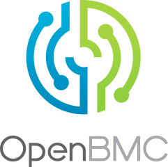
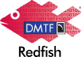
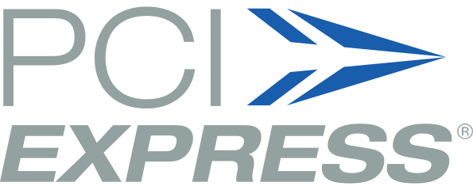
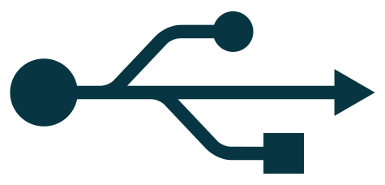
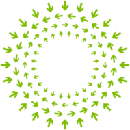

Resume
ResumePhong V. Cao
Senior SWENvidia 
I work where firmware meets the rest of the data center: OpenBMC controllers, Redfish contracts and production validation. Recent work includes release-blocking GPU firmware fixes, a vendor-adopted rack power API, physical-slot GPU naming through a cross-team RFC, and validation used to gate partner-bound releases.
Experience(11+ YOE)
Senior Software Engineer
- Owned resolutions of release-blocking GPU board failures, with LAN-over-USB fixes shipped across Nvidia HGX platforms.
- Owned Redfish reference schemas and conformance for HGX Rubin NVL8 gating partner-bound firmware releases.
- Established physical-slot GPU naming conventions on HGX Rubin NVL8 through cross-team RFC.
- Drove firmware fixes in
bmcweb,entity-managerand the telemetry daemon, shipped in 3 Nvidia products. - Partnered with NIC firmware team to address

PCIe firmware defect via raw MCTP tests.
Senior Software Engineer
- Owned power shelf controller firmware for GB200 NVL72 fleet, enforcing rack power limits and AC-loss recovery.
- Owned
OpenBMC-on-QEMUemulation for the GB200 NVL72, enabling pre-hardware validation and regression testing. - Architected the power shelf
RedfishAPI that a power shelf vendor adopted and Nvidia's customer telemetry guide now uses. - Built the C++ rack power service (
D-Bus/sdbusplus) as one Nvidia control path for power shelves from multiple vendors.
Senior Software Engineer
- Led design of key features for Tesla's factory Material Flow System (
Go,JavaScript,Python,SQL,Kafka). - Drove factory material flow throughput up ~21% with pickup and drop-off prioritization.
- Improved
Kafkaperformance ~33% through topic partitioning and message compression. - Mentored interns and new engineers through structured onboarding.
Software Engineer
- Built features for Alphabet's automated security-risk system, rating each device by hardware profile and user behavior.
- Cut data pipeline latency ~15% with parallel and concurrent processing (
Go,C++,Kubernetes). - Raised database performance ~11% with
Spannersharding (SQL,Spanner). - Assigned security risk levels automatically from hardware security key data and flagged devices with modified firmware.
Software Engineer
- Built test libraries and common hardware-access API for many server types in Google data centers (
Go,C++,Python). - Wrote tests detecting CPU and memory security weaknesses (
Rowhammer) on Intel and AMD servers. - Raised service level availability ~0.5% by redesigning server hardware tests.
- Improved test infrastructure API performance ~5% with heuristic analysis tools (
Go,Python,C++).
Software Engineer
- Wrote Linux kernel modules and switch-chip drivers for
Arista EOSon thousands of switches in cloud data centers. - Raised data transfer rates across switches and routers ~19% by refactoring kernel drivers.
- Led switch-chip driver library work that cut product cost ~10% (
C++).
Creator
- Built and runs hire4real.fyi, a free public index of 11M+ US Department of Labor filings across 333K+ employers.
- 700K+ unique visitors per month (Plausible), with the typed parsing core open source (MIT) under pytest and CI.
- Built and operated the platform end to end with AI coding agents (Claude, DeepSeek), from data parsing to deployment.
 DeepSeek
DeepSeekTechnical Decisions
GPU Naming · HGX Rubin NVL8
Standardized GPU names by physical slot through a cross-team RFC so firmware logs identify the hardware a technician must service.
- Problem
- Firmware and the OS numbered the same GPUs differently, creating a risk of servicing the wrong unit.
- Decision
- Use physical-slot GPU names in firmware event logs. The proposal was reviewed across teams.
- Adopted
- Physical-slot naming was established on HGX Rubin NVL8.
- Trade-off
- BMC-driven per-slot locate LEDs were also proposed through the Redfish locate-indicator property, but the LED hardware part was not adopted. The naming improvement shipped without requiring that hardware change.
Redfish Contract · GB200 NVL72
Designed one rack-power API across power shelf vendors; a vendor adopted it and Nvidia's customer telemetry guide uses its power-state names.
- Problem
- Power shelves from multiple vendors needed one Nvidia layout for rack power state, limits, policies and AC-loss behavior.
- Decision
- Design the Redfish/CSDL and JSON Schema contract, then implement the OEM resources and actions in bmcweb with a C++ sdbusplus service.
- Adopted
- A power shelf vendor adopted the policy and AC-loss portions; Nvidia's customer telemetry guide uses the power-state names.
- Trade-off
- Firmware controlling a rack's power needs a strict boundary around what each request may do; the API was designed with that boundary from the start.
AI Loop Engineering · Redfish Validation
Made one live-board capture feed multiple validators and model comparisons, with automated checks instead of hand-entered conclusions.
- Problem
- Release validation repeatedly exercised scarce live hardware and made results difficult to compare across tools.
- Decision
- Use one live-board capture as the shared input for DMTF and in-house validators plus model comparisons.
- Guardrail
- An LLM may route failure triage, but it cannot invent a resource or hide a failed check. Rule-based fixers work on a disposable copy; a validator re-run must prove every change.
- Result
- A release image can be checked against real hardware before it ships using one repeatable workflow.
Projects(Over 11+ Yrs)
GPU Management Controller Firmware
Owned release-blocking GPU-baseboard fixes across bmcweb, entity-manager and telemetry, with changes shipped in 3 Nvidia products.
- Cross-layer work: hardened


USB link recovery, corrected inventory and telemetry behavior, and established physical-slot GPU naming through a cross-team RFC. - Verification covered AC power-cycle recovery for the USB link fix and boundary unit tests before the fixes shipped.
- The naming work is written up under Technical Decisions.
Rack Power Management
Designed the GB200 NVL72 rack-power API and C++ D-Bus service so tools can read and set power policy across shelf vendors.
- A power shelf vendor adopted the policy and AC-loss portions; Nvidia's customer telemetry guide uses the power-state names.
- Built OpenBMC-on-QEMU test infrastructure before production hardware was available, including networking and simulated I2C FRU EEPROMs.
- The API design is written up under Technical Decisions.
Redfish Conformance Automation
Built a repeatable Redfish Conformance workflow that checks release images against real hardware using one shared capture across validators.
- The station exposes a REST API and runs an automated test suite, so a release image is checked end to end.
- Designed a setup wizard, safe mode, input lock, live status and owner-ordered reports so other firmware engineers can run checks without the author.
- The capture and triage design is written up under Technical Decisions.
Security Risk Automation
Automated device risk decisions using hardware security-key data and modified-firmware signals, cutting pipeline latency about 15% and improving Spanner performance about 11%.
- Built features for Alphabet's automated security-risk system, rating devices by hardware profile and user behavior.
- Used parallel and concurrent processing with Go, C++ and Kubernetes, and Spanner sharding with SQL.
Server Hardware Testing
Built common hardware-access API across many server types and tests for CPU and memory weaknesses on Intel and AMD fleets.
- Wrote tests detecting weaknesses such as Rowhammer on Intel and AMD servers.
- Redesigned server hardware tests, raising service-level availability about 0.5%.
- Improved test-infrastructure API performance about 5% with heuristic analysis tools.
Factory Material Flow
Led factory Material Flow features and pickup/drop-off prioritization, lifting throughput about 21% and Kafka performance about 33%.
Switch-Chip Drivers
Developed kernel modules and switch-chip drivers for Arista EOS on thousands of cloud data-center switches, improving transfer rates about 19%.
- Brought new whitebox switch hardware onto Arista EOS through drivers and adapter layers.
- Led switch-chip driver library work that cut product cost about 10%.
Hire4Real.fyi
Built and operates a public index of 11M+ US Department of Labor filings across 333K+ employers, serving 700K+ unique visitors per month.
Open Source
vim-stardict: dictionary-lookup plugin for the Vim editor, with Bash and Zsh support (Python, VimL).
Skills
- Firmware
OpenBMC(bmcweb,entity-manager,sdbusplus), Embedded Linux, Linux Drivers,U-Boot,Yocto,BitBake- Validation
pytest,Playwright,QEMU(ASPEED AST2600), DMTF validator runs, board bring-up,
soak tests- Hardware
- Nvidia HGX GPU Baseboards, Rack Power Shelf, ASPEED AST2600 BMC, Broadcom Tomahawk/Trident ASICs
Education
Firmware engineer in Austin, TX 11+ YOE husband father builder
Built with OpenCode · static site · no live session